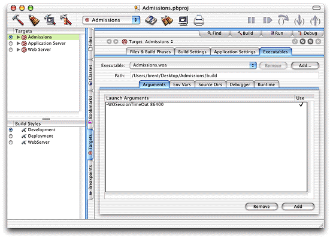

Java Client applications have usability patterns different from those of HTML applications—their usage patterns resemble those of desktop applications. Desktop applications are often left open for hours at a time, with only intermittent usage. Users expect to return to desktop applications after hours of no use and start working again.
The default session timeout (60 minutes) is too short, so you need to set the timeout higher. Setting the timeout to 24 hours (86400 seconds) will better match the usage pattern of Java Client applications.
Follow these steps to change the session timeout:
-WOSessionTimeOut
86400 as a launch argument as shown in Figure 3-14. Figure 3-14 Add session timeout launch argument
